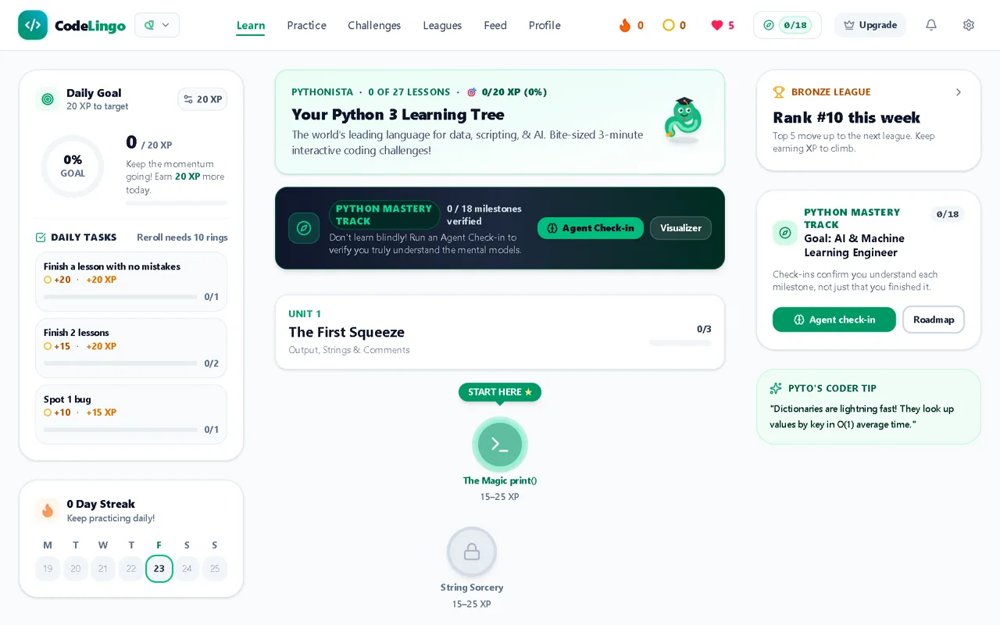
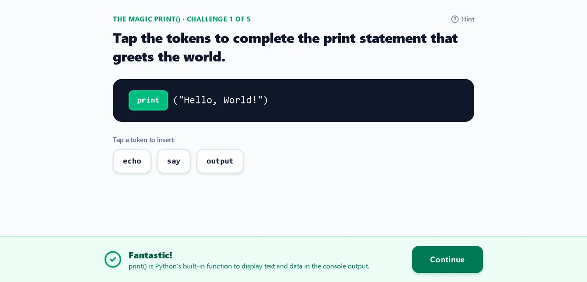

Duolingo turned language practice into something people open every day. CodeLingo tries the same thing for code: five minutes a day, short challenges, streaks and leagues. The difference is that every answer is real code that actually runs, not a multiple-choice guess.

What's in it
Four courses, built lesson by lesson:
- Python: 10 units, 27 lessons, 189 challenges
- JavaScript: 9 units, 27 lessons, 189 challenges
- SQL: 9 units, 20 lessons, 140 challenges
- HTML & CSS: 6 units, 9 lessons, 63 challenges
That's 581 challenges, plus 22 practice sets and a free sandbox. Around them sits the game loop: XP and levels, streaks, gold rings, life points, daily tasks, a ring shop, badges and leagues.
The hard part: running real code safely
Checking an answer by comparing text is easy and wrong. print('hi') and print("hi") are both correct. So CodeLingo runs the code and grades what it does:
- Python runs in the browser through Pyodide, inside a Web Worker so a slow loop can't freeze the page.
- JavaScript runs in its own locked-down Web Worker, away from the page and your account.
- SQL runs on a built-in engine against a sample database.
- HTML & CSS are graded with structural checks.
Nothing has to be installed, and no code leaves your device to be graded. A wrong answer gets one more try before the explanation shows, so you get a chance to fix it yourself first.

Making sure 581 answers are actually right
With this many challenges, one broken answer key is a learner stuck on a question they got right. So the app checks itself. Every pull request runs six checks in GitHub Actions:
- Type checking and a full build
- Every lesson and challenge has the right structure
- Course roadmaps match the actual lessons
- Rewards and shop prices match the game's economy table
- Every sample answer is run through its own grader and has to pass
Security before going public
Before I made the code public, I ran a security review and fixed what it found:
- A strict Content Security Policy, with no
unsafe-evalallowed - JavaScript challenges moved into an isolated worker
- Database limits on profile text, plus a filter for usernames and bios
- Sign-in no longer reveals whether an email has an account
Accounts are optional. Without them, everything runs locally in the browser. With them, progress syncs through Supabase, and row-level security makes sure each person can only touch their own data.
How I build it
Every change is its own small pull request against main, with the checks running before it merges. There have been nearly 30 so far, following a written build plan. Small PRs are easy to review, and a bad change is easy to find and undo.
What's next
AI check-ins that test whether you really understand each milestone, then payments and a launch. It isn't live yet, so there are no users to report. When there are, the numbers go here.
Need something built?
I build web apps and AI tools for small businesses, from booking sites to receptionists that answer while you work.
Let's talk